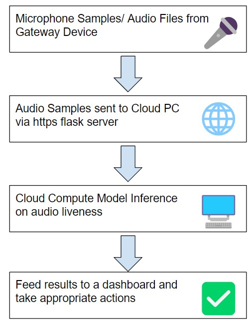

The advent of generative AI is inevitable when generating synthetic data to bypass certain human verification systems. The objective of RuHuman is to evaluate/refine existing verification systems presented in ASVSpoof that exploit the multimodalities of audio data in order to establish a strong multi-factored conviction on deciding if the input is being lively uttered by a human or by an audio deepfake. The technical approach is to generate samples with top of the line software in voice cloning (e.g. TortoiseTTS), then evaluate the standard CM/ASV metrics among different pretrained detector architectures with the ASVSpoof2021 evaluation set & make a adaptable user interface that allows any wireless device with a microphone employ these systems in versatile environments.
The advent of generative AI is inevitable when generating synthetic data to bypass certain human verification systems. With advancements in audio deepfakes, human perception in distinguishing a real human speaker (bonafide) from an audio deepfake (spoof) is rapidly increasing in complexity. This is unfortunately seen in the growing number of audio deepfake crimes, including a recent story on the news highlighting a mother almost being scammed out of $15,000 from a deepfake of her daughter being kidnapped. The assistance of an automated AI-powered audio verification that’s easily accessible is essential for mitigating more people from falling victim of these schemes.
The objective of RuHuman is to evaluate/refine existing verification systems that exploit the multimodalities of audio data in order to establish a strong multi-factored conviction on deciding if the input is being lively uttered by a human or by some other medium (e.g. recording playback or synthesized with generative AI). Additionally, the project aims to be easily accessible to the general public, being able to be employed on any client wireless device that has a microphone. This makes liveness detection versatile in many environments such as robocalls & virtual interviews.
Audio ASVSpoof (Automatic Speaker Verification and Spoofing Countermeasure Challenge) [1] is a dedicated challenge that gathers researchers from around the world to developing audio spoofing pipelines. The two problems explored in this challenge are Logical Access (LA) attacks (Speech Synthesis/Voice Conversions) and Physical Attacks (PA) (Replay through Speaker). RuHuman will mainly being focused on systems that participate in LA type tasks. Researchers have presented audio encoding schemes such as MFCC (Mel-frequency cepstral coefficients) & Spectrograms to augment training their classifiers for detection [2]. The limits of the practice is that some datasets used for training in the competition were in a controlled environment, which limits the effect of alternative additive sources in real-world applications (e.g. noise, multi-speakers, nature) [3].
RuHuman investigates how additive noise sources effect the performance of systems by injecting them with the audio sample before testing. If this project yields success, the approach should indicate to researchers in the ASVspoof competition that the technical factors of additive sound sources is imperative for training their submissions in real-world environments. On a more broader sense, the user interface that will be implemented should make it easy for the general public to assess if their audio files were bonafide. They should be able to access audio liveness detection from a large range of computing: from a smartphone to an audio workstation.
Potential challenges when evaluating these audio liveness detection systems come from advanced spoof attacks such as multi-speakers. For instance, a bonafide speaker can utter a words for the first few seconds in the sample, and then generative AI can synthesize the rest of the audio, leading to the system potentially classifying the sample only based on the initial audio samples. Another way for a potential spoof is if a human and generative AI spoke concurrently, it can produce a hidden set, potentially leading to a false positive classification.
In the development of this project, a strong command of Digital Speech Processing is required when working with analysis of audio files. Specifically, knowledge of STFT (short-time Fourier Transform) and other frequency based audio encodings will be applied in many of these implementations. Knowledge of neural network architectures are useful for training the detector to infer on real-world audio samples. Hardware resources to development RuHuman are NVIDIA GPU(s) with high VRAM (e.g. NVIDIA RTX 3090) for their acceleration improvements performing convolution. Software resources for RuHuman include PyTorch [4] & MATLAB which is the code baseline for many of the deepfake voice detectors/synthesizers. The program dependencies of this project are the various deepfake voice cloning programs (e.g. Tortoise [5]) and detectors from ASVSpoof.
The success for evaluating each of the models of ASVSpoof is to evaluate them against the tandem detection cost function (t-DCF) [6] formulated by the authors of ASVSpoof. It is a metric which involves predefined ASV scores (from organizers), prior probabilities of speakers (based on dataset), and CM scores from a respective detector. Secondary metrics to evaluate success with be the equal error rate (EER) and computation time of each submission. The objective is to minimize these metrics for efficiency and accuracy. These metrics will be computed with respect to the augmented dataset mentioned previously.
There have been work in ASVSpoof submissions that fuse multiple audio encoding models together in order to further minimize t-DCF and EER metrics. Specifically, an ASVSpoof2019 submission from UCLA NESL (Network and Embedded Systems Laboratory) implemented residual neural networks using ResNet blocks as a countermeasure system [2]. The input features being embedded are from either log-STFT (for Spectrograms), MFCC, or CQCC transforms. With each individual ResNet model alone (i.e. Spec-ResNet, MFCC-ResNet, & CQCC-ResNet), the pooled t-DCF and EER metrics only scored higher than the baseline models (i.e. LFCC-GMM, CQCC-GMM) on the ASVSpoof2019 LA evaluation set. However, when their ResNet models were fused, it resulted in approximately 25% improvement from the baseline models with t-DCF = 0.1569 & EER = 6.02. The takeaway is that combining multiple models with different audio modalities together produce a strong multi-factored countermeasure for audio speaker verification.
The first phase of RuHuman is an evaluatory phase with some of the
baseline ASVSpoof models (can only generate CM scores with custom voice
detectors/cloners). First, each baseline model was worked out to
evaluate the CM scores of the 2021 ASVSpoof LA evaluation set to
generate the pooled t-DCF and EER scores seen in the organizer’s results
[1]. The 2021 ASVSpoof LA evaluation set consists of 181,566 utterances
comprised of 67 distinct speakers (37 Female, 30 Male). Then, additive
white gaussian noise (AWGN) with a signal to noise
ratio of 50 was injected in each audio sample to
generate a more ‘in-the wild’ sample that simulates a noisy channel.
This is done using the awgn function in MATLAB. Afterwards,
the CM scores, t-DCF, and EER metrics are recomputed to compare on AWGN
effects performance of the baseline system’s countermeasurablity.

Tortoise [5] is a multi-voice text to speech synthesis model which relies on autoregressive decoders, a text to audio text transformer known as CLVP (Contrastive Learning Voice Pretrained Transformer), and a DDPM (Denoising Diffusion Probabilistic Models). It synthesizes the prompt input by first passing it through CLVP to retrieve the optimal speech candidate given the prompt, then transforms it into a Mel Spectrogram which finally converts to an audio sample by using a vocoder. The optimization to generate semantically realistic outputs is by finetuning the autoregressive model in the latent space which has higher feature resolution then when discrete. The combination of models were trained on over 49,000 hours of data from known TTS datasets (LibriTTS,HiFiTTS) in addition to parsed samples from audiobooks and podcasts. Testing for RuHuman was done by inferencing on the default voice models found on it’s GitHub repository [11].
Apple Personal Voice [7] is a personalized propietary voice cloner that has been released for the latest (at time of writing) version of iOS/macOS devices. It allows for synthesis of personal voices by taking in 150 locally recorded bonafide utterances (around 15 mins in length) from the user. Training the model is done locally on the device and takes several hours to complete the model (due to how it’s computed). Once completed the user can synthesize text to speech of their own personal voice to be lively uttered through their device. Due to the nature of how new the feature is and being restrictive to Apple devices (at time of writing), exporting the model and even it’s samples is a bit tedious (i.e. by converting a screen recorded video into audio). Thus, only a qualitative assesment is done with human perception (trained with author’s personal voice) with some individual samples pass through RuHuman’s user interface for testing.
LFCC-GMM/CQCC-GMM [9] are baseline countermeasure systems from ASVSpoof that rely on Gaussian Mixture Models for clustering an input sample into a distribution that is comprised of the linear combination of normal distributions (model uses 512 distributions). The weights of each normal distribution is determined by the Expectation-Maximisation (EM) algorithm which add up to one. It outputs the log-likelihood ratio (LLR) between being bonafide over being spoofed. LFCC (Linear Frequency Cepstral Coefficients) is an audio feature which maps frequency powers through a linear filter bank (LFCC-GMM has 70 filters) whose representation is taking the DCT of the log of the coefficients. CQCC (Constant Q Cepstral Coefficient) is a similar audio feature which maps frequency powers through the constant Q transform, then take the DCT of the log of it’s coefficients (CQCC-GMM uses 19 coefficients). Feature encoding using cepstral features are important because it emphasizes frequency components use for speaker utterance (i.e. CQCC emphasis more spectro/temporal resolution at lower/higher frequencies).
RawNet2 [10] is an end to end raw audio spoofing pipeline from ASVSpoof that relies on neural networks for classifying between bonafide and spoofed utterances. The initial layer is encoded through a Mel Sinc filter bank because of it’s frequency emphasis for anti-spoofing. The input is truncated to 64,000 samples (4 seconds assuming 16Khz sampling rate) as a means of control through the input layer. Afterwards, it is passed through a sequence of ResBlock layers with skip connection and feature map scaling (FMS) to enable classification of discriminative information with attention. Finally, the model output, represented as a two-class likelihood between bonafide and spoof, is constructed by passing the res blocks output to a GRU (Gate-Recurrent Unit) and a fully connected layer. It’s baseline performance compared to the GMM models improved with lower pooled EER and t-DCF metrics.
All baseline models from ASVSpoof outlined above were pretrained on the ASVSpoof2019 LA training set [3]. It consists of 25,380 samples, partitioned from 20/107 distinct speakers from the total dataset.
Out of concern that Tortoise [5] might be ethically misused, the authors developed a countermeasure against the main cloner in order to produce the likelihood that a sample was generated by the program. The classifier architecture [11] is an audio mini encoder with a classifier head which consists of a Res block (containing normalization, sigmoid activation and 1D convolution) that goes through cross-entropy loss to return the probability of the audio sample being generated by TortoiseTTS. It compensates with noise by distributing 20% of the sample’s probability mass to the labels during initialization. RuHuman considers the classifier from Tortoise as an ‘Out in the Wild’ detector model since it was trained on a huge dataset as outlined in the previous section of it’s counterpart.
The user interface is implemented in Python Flask to server an HTTPS
Web App for RuHuman. The front-end consists of two options to upload an
audio sample: by recording live or uploading an audio sample. Recording
a live sample is achieved by utilizing the getUserMedia()
and MediaRecorder() function and saving a blob to an HTML
form. Uploading an audio file is simply creating an HTML form and
allowing file inputs to be uploaded to the form. Users can also choose a
detector model to use for verification, which is sent to the server via
another input in the form. The user interface for the front-end is shown
below:
The back-end consists of linking the form to a POST request in
Python, which then calls on the selected detector from the front-end
form to run it’s verification pipeline. RuHuman firsts needs to convert
the uploaded audio sample to the respective input format for each
detector, which does so by invoking ffmpeg. To call each
detector, refactored callable functions are manually created for each
individual detector model with arguments to the path of the recently
uploaded audio file (by default pipelines are meant to run on entire
datasets). Detector functions are then imported to the Flask front-end
by using absolute paths to either the refactored Python function files
(Python-based) or matlab.engine (MATLAB-based). The outputs
(either LLR or raw probability) from the detectors are showcased as a
percentage. This output is visualized on a dashboard in addition to
other metrics such as computation time, the uploaded audio, and it’s Mel
Spectrogram (plotted with librosa). An example dashboard is
shown below:

Tabulated Below are Pooled t-DCF and EERs for the 2021 ASVSpoof Evaluation Set for it’s Baseline Models with & without AWGN:
| Detector Architecture (Normal) | Pooled t-DCF | Pooled EER (%) |
|---|---|---|
| Baseline LFCC-GMM (MATLAB) | 0.5758 | 19.30 |
| Baseline CQCC-GMM (MATLAB) | 0.4964 | 15.62 |
| Baseline RawNet2 (MATLAB) | 0.4255 | 9.49 |
| Detector Architecture (AWGN) | Pooled t-DCF | Pooled EER (%) |
|---|---|---|
| Baseline LFCC-GMM (MATLAB) | 0.8527 | 41.33 |
| Baseline CQCC-GMM (MATLAB) | 0.7609 | 31.99 |
| Baseline RawNet2 (MATLAB) | 0.3317 | 7.23 |
The full raw CM Scores that generated the above metrics using
eval-package can be found in the results
folder of this repository.
Tabulated Below are Average Computation Times for verifying a sample from the ASVSpoof2021 LA evaluation dataset. For context, each audio sample is approximately 3-5 seconds in length.
| Detector Architecture | Average Computation Time (s) |
|---|---|
| Tortoise Audio Mini Encoder (Python) | 0.22 |
| Baseline LFCC-GMM (MATLAB) | 0.18 |
| Baseline CQCC-GMM (MATLAB) | 0.27 |
| Baseline RawNet2 (Python) | 0.30 |
From the primary evaluation of metrics in phase 1, it is indicative that additive noise can be injected to enhance an adversarial spoofing attack to being successful. For the GMMs with LFCC/CQCC embeddings, the rates for pooled t-DCF and EER increased by 48.8/53.2% and 114.1/104.8% respectively. An interesting observation is that the RawNet2 rates for pooled t-DCF and EER actually decreased by 22% and 23.8% when AWGN was applied to the evaluation set. Perhaps this is due to the initial layer of Mel Sinc Filters which mitigated the effect of the AWGN before passing through the Res blocks. On an efficiency note, all the detectors were able to predict an audio sample within less than a second, making them usable for liveness detection. Finally, the user interface was deployed and tested to be easily accessible from gateway devices.
A future iteration of this project is to isolate noise sources as a preprocessing step to prevent it from being sent to the detectors. Noise should be mitigated as a factor when a CM score is computed for a specific utterance. Another application from this project is to forward the classifier outputs to an embedded control system (e.g. turning a light red/green on whether the sample is spoofed/bonafide) for performative action which requires liveness detection. Finally, RuHuman’s audio verification can be fused with other modalities of liveness detection (i.e. video deep fake detection) for a complete system for detecting deepfakes. Audio generative models are advancing rapidly with state of the art deepfakes, thus a complement of a multi-modal discriminator for distinguishing bonadife from spoof is imperative, which is what RuHuman strives to achieve.
[1] X. Liu et al., “ASVspoof 2021: Towards Spoofed and Deepfake Speech Detection in the Wild,” in IEEE/ACM Transactions on Audio, Speech, and Language Processing, vol. 31, pp. 2507-2522, 2023, doi: 10.1109/TASLP.2023.3285283.
[2] M. Alzantot, Z. Wang, and M. B. Srivastava, “Deep Residual Neural Networks For Audio Spoofing Detection,” 2019, arXiv:1907.00501.
[3] A. Nautsch et al., ‘ASVspoof 2019: Spoofing Countermeasures for the Detection of Synthesized, Converted and Replayed Speech’, IEEE Transactions on Biometrics, Behavior, and Identity Science, vol. 3, no. 2, pp. 252–265, Apr. 2021.
[4] A. Paszke et al., “PyTorch: An Imperative Style, High-Performance Deep Learning Library”, in Proceedings of the 33rd International Conference on Neural Information Processing Systems, Red Hook, NY, USA: Curran Associates Inc., 2019.
[5] J. Betker, ‘Better speech synthesis through scaling’, arXiv [cs.SD]. 2023.
[6] T. Kinnunen et al., “t-DCF: a Detection Cost Function for the Tandem Assessment of Spoofing Countermeasures and Automatic Speaker Verification”, arXiv [eess.AS]. 2019.
[7] Apple Newsroom, “Apple previews Live Speech, Personal Voice, and more new accessibility features”, https://www.apple.com/newsroom/2023/05/apple-previews-live-speech-personal-voice-and-more-new-accessibility-features/.
[8] M. Todisco, H. Delgado and N. Evans, “Constant Q cepstral coefficients: a spoofing countermeasure for automatic speaker verification”, Computer, Speech and Language, vol. 45, pp. 516 –535, 2017.
[9] H. Tak, J. Patino, A. Nautsch, N. Evans, M. Todisco, “Spoofing Attack Detection using the Non-linear Fusion of Sub-band Classifiers” in Proc INTERSPEECH, 2020.
[10] H. Tak, J. Patino, M. Todisco, A. Nautsch, N. Evans, and A. Larcher, ‘End-to-End anti-spoofing with RawNet2’, in IEEE International Conference on Acoustics, Speech and Signal Processing (ICASSP), 2021, pp. 6369–6373.
[11] J. Betker, TorToiSe text-to-speech. https://github.com/neonbjb/tortoise-tts.